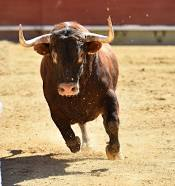

Bull

Bulls are male cattle known for their strength, size, and significance in agriculture and cultural contexts.
Physical Characteristics
- Size: Bulls are generally larger and more muscular than female cattle (cows), with variations in size based on breed and age.
- Muscular Build: They have well-developed muscles, particularly in their neck and shoulders.
- Horns: Many bulls have horns, which can vary in size, shape, and curvature among different breeds.
Behavior and Habitat
- Habitat: Bulls are typically found on farms, ranches, and agricultural settings around the world.
- Behavior: Bulls are known for their territorial and sometimes aggressive behavior, particularly during the mating season.
- Social Structure: In cattle herds, bulls often establish dominance hierarchies and compete for breeding opportunities.
Diet
Bulls are herbivores and primarily feed on a diet of grass, hay, grains, and other plant-based foods.
Significance
Bulls have cultural significance in many societies, often symbolizing strength, fertility, and power. They are also important in agriculture for breeding and meat production.
Interesting Facts
- Mating Behavior: During the mating season, bulls may engage in various behaviors to compete for the attention of cows.
- Work Animals: In some regions, bulls have been traditionally used as work animals, helping with tasks like plowing fields.
- Bullfighting: Bullfighting is a traditional spectacle in certain cultures, although it is controversial due to animal welfare concerns.